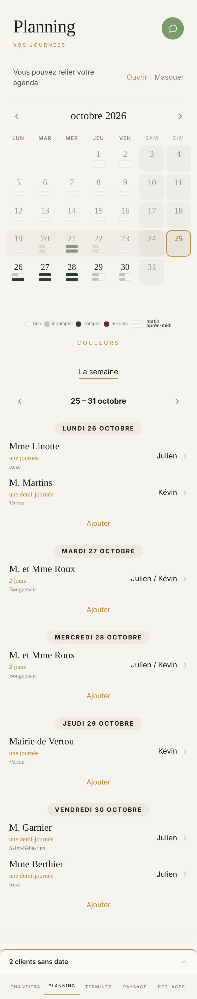

Proposé
Aujourd'hui

Ce qui change
- La semaine se lit d'office sous le mois, Aujourd'hui en or d'abord. Plus besoin de toucher La semaine pour savoir qui part où.
- Chaque jour range ses chantiers dans une plage claire : le nom en grand, l'équipe à droite, la durée en or et la ville dessous, dans la même écriture.
- Ajouter vit au bout de son jour, sous les noms, au lieu de flotter au milieu cinq fois de suite.
- La légende se range sous le mois, et Couleurs vient à côté d'elle, puisque c'est elle qu'il change.
- Le conseil de relier l'agenda descend en bas de page. Une panne, elle, reste en haut, en rouge.
- La fiche du jour écrit la date en toutes lettres ; la fiche d'intervention ne redit plus le nom, et Maps, Waze, Copier l'adresse, Appeler le client tiennent en deux rangées.
- Plus de petit titre doré de 9,5 px sous Planning.
Ce qui reste comme dans l'appli
- Le mois au-dessus, deux barres par jour (le matin en haut), les quatre états et vos couleurs, les carrés du week-end, rien en blanc, aujourd'hui cerné d'or.
- Toucher un jour ouvre sa fiche sous sa semaine, la pointe sur la case, et retire la liste. Un jour d'un seul chantier ouvre sa fiche d'office.
- Le nom ouvre, le chevron mène au devis et à la fiche client.
- Salarié absent ? sans contour ; Déplacer, Retirer, Supprimer en bas à droite ; Ajouter propose Client en attente, Un client, Autre chose.
- Le tiroir du bas garde sa place et sa phrase : 2 clients sans date, puis À poser le mardi 27 octobre quand un jour est touché.
- Un salarié lit tout, sans un seul geste d'écriture.
À trancher
- La semaine visible d'office revient sur votre réponse du 15 octobre (au repos, rien sous le mois). Je la propose parce que c'est la première chose qu'on vient lire le matin. Si vous préférez le mot La semaine, il revient tel quel, et le reste de la planche ne bouge pas.